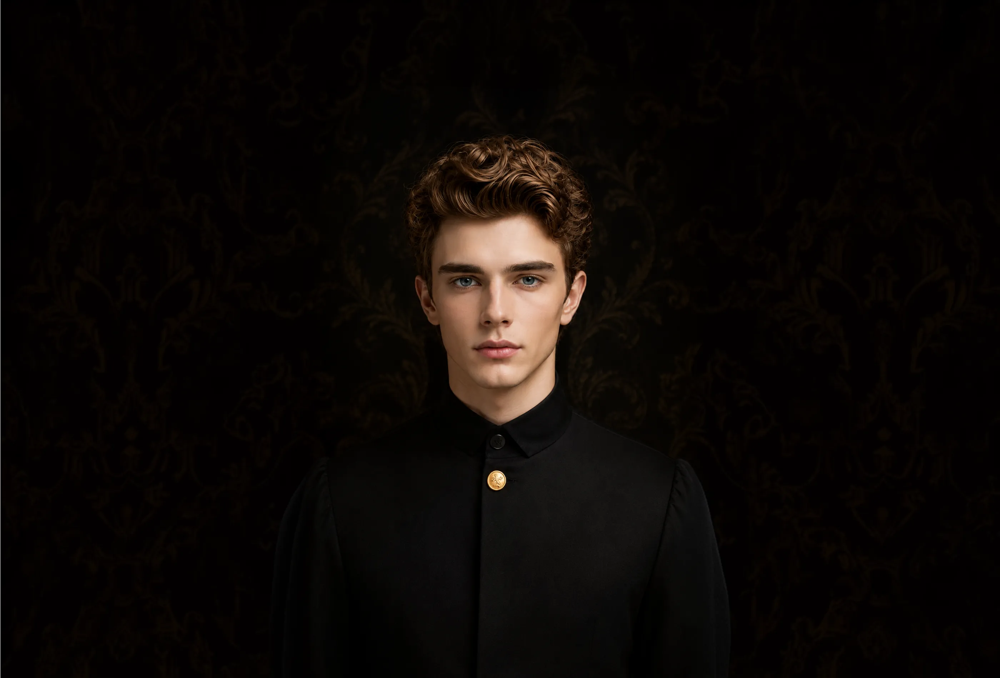
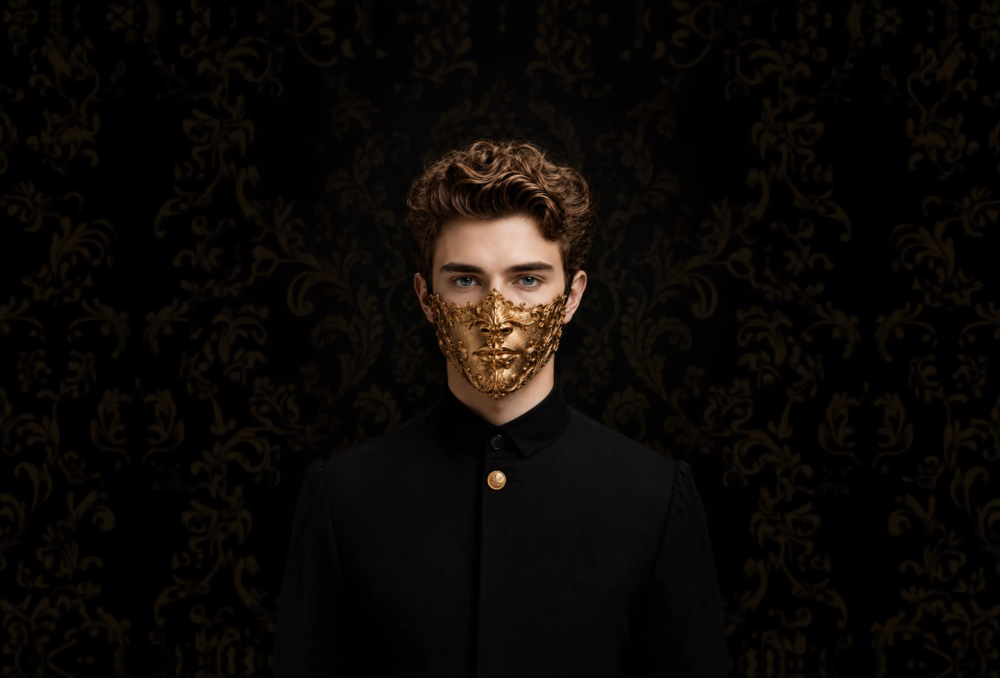

stories in light motion
night work only
slow shutters, moving light. i make short visual stories after dark — where motion becomes the subject and light does the drawing. no studio, no staging: just time, left open long enough to leave a trace.
selected work — vol.01
( 07 stories )i work between sunset and the first bus.
commissions
- editorial & night features
- music sleeves and tour stills
- campaigns that happen after dark
method
tripod, open shutter, available light. every frame is a single exposure; nothing is composited after the fact.